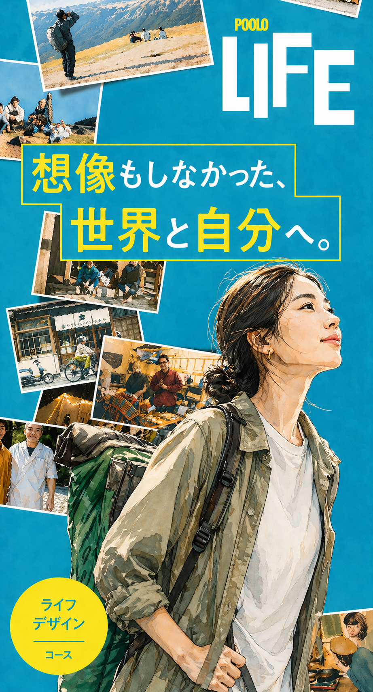

about POOLO
あたらしい
旅の学校、
POOLO（ポーロ）
コンセプトは、
旅と人生をつなぐ、大人の学び。
旅する、問う、創る。
これらの実践を仲間と繰り返し
想像もしなかった世界と自分に、
出会いにいくことを目指します。
2019年に始まり、卒業生は1,100人超。
全国、世界から参加者が集まる
オンラインスクールです。
旅と、問いと、共創。
この3つが重なるところに、POOLO LIFE の8ヶ月があります。
活動はオンラインを主軸に組まれていて、月に数回のライブセッションと、いつでも見返せる録画があります。オフラインで集まるのは月1〜2回ほど。週の目安は、ご自身のペースに合わせて2〜4時間ほど。録画があるので、当日参加できない回も後追いできます。
仲間と一緒に、自分のリズムで歩いていける8ヶ月になるよう、運営チームから招待していきます。
three POOLO models
欲求が動き出す
3つのPOOLOモデル
学び方も、姿勢も、設計図も、
ふつうの学校とは少しちがいます。
その3つのモデルを、お伝えします。
探究テーマから、
旅・問い・共創がはじまる。
心が動いてしまうもの（探究テーマ）を起点に、旅で揺さぶられ、問いで磨かれ、共創でかたちになる。これがPOOLOの学び方です。
動き出すための、
3つの姿勢。
POOLO LIFE の8ヶ月、すべての活動の下で動き続ける3つの姿勢です。3つは時期で切り替わるのではなく、いつも一緒にあって、立ち戻れる足場になります。
目標から逆算しない、
関心から探究する。
3年後の自分から逆算して今を設計するやり方ではなく、今、心が動いてしまうものから次の一歩を選んでいくやり方。POOLOはこちら側の場所です。
3年後の像を決め、そこから今を設計する。明快さ・効率重視。
今、気になることを差し出して、関係の中で次が立ち上がる。
activity
D
ここから、
どう動いていくのか
探究テーマ、実践、場。
この3つが揃って、はじめて動き始める。
探究テーマ × 実践 × 場
この3つが揃って、はじめて動き始める
「3年後こうなりたい」ではなく、今どうしても気になってしまうもの。設定するものではなく、先にそこにあるもの。最初はぼんやりでいい。実践を回すうちに輪郭が出てくる。
身体で飛び込む（旅）→ 自分の言葉にする（問い）→ 差し出してみる（作る）。反応が返って、また旅へ。
関心探究型の仲間が集まる場。各人の追いかけたいものが、互いの引力として干渉し合う。
この場で、具体的にやることは6つ。
旅。場所と時間を変えにいく。
8ヶ月で複数回、いつもの場所から離れる。
旅をひらく。視点を持ち帰る。
旅で動いた心を、仲間と分かち合う。
ゲストの問いに、揺さぶられる。
月1回、生き方を編んでいる方を招く。前提を揺さぶってもらう時間。
問いをくぐらせて、磨く。
探究テーマを、ファシリと仲間の問いに何度もくぐらせる。
仲間に、小さく差し出してみる。
磨いた探究テーマを、まず仲間に差し出して反応を浴びる。
知らない人に、届くところまで。
終盤は、仲間の外側へ。知らない誰かに届く瞬間まで伴走する。
outcome
8ヶ月で、こんな変化が
起きています。
卒業生によく見られる
4つのパターンをご紹介。
graduates' voice
卒業生が語る、
8ヶ月の変化。
「フリーランスとして独立。
最初のピースは仲間との対話で。」
Before：仕事一辺倒で余白のない日々
After：フリーランス独立、拠点を移しながら働く
「ありのままの自分を出していい。
その一言がすべてを変えた。」
Before：評価を気にして言葉を選ぶ癖
After：違和感を対話の起点にできる
「海のある町へ移住した。
仕事も人生の一部として楽しめる。」
Before：都内でのキャリア一本道
After：海辺の町へ移住、リモートで働く
「歩いて日本一周を始めた。
本気で語れる仲間がいる場所。」
Before：「このままでは終われない」焦り
After：歩いて日本一周プロジェクト開始
lens
G
旅で開いた眼差しが、
社会との接点になる。
旅は、行って終わるものではないと思っています。
旅で開いた眼差しは、日常に戻ったあとも、
自分の手元に残り続けます。
そしてそれは、自分の探究テーマと社会をつなぐ、細い線になっていきます。
想像もしなかった世界に、出会いにいく
旅というレンズを通して、参加者同士でテーマを探究する。2層構造で広がっていきます。
場所と時間を変えると、自分の中の見え方が少しずつ変わります。
旅で得た視点で、自分の好きや違和感を見直すと、探究テーマがくっきりしてきます。
磨いた探究テーマは、誰かの困りごとや、まだ言葉になっていない欲求と、自然と重なり合います。
この重なりの真ん中のところに、豊かさと呼ばれるものが立ち上がってくると思っています。
core model
H
POOLO LIFE が成立する、
3つの噛み合わせ。
旅・問い・共創は、それだけでは機能しないと思っています。
学びのモデル、旅のスタンス、関心探究の型。
この3つが噛み合うところに、POOLO LIFE の体験が生まれます。
心が動いてしまうものを起点に、旅で揺さぶられ、問いで磨かれ、共創でかたちになる。POOLOの学びの素材そのもの。A PHILOSOPHYで紹介したモデル。
8ヶ月をくぐる土台となる、3つの姿勢。旅・問い・共創のすべてに通底する立ち戻り場所。B PHILOSOPHYで紹介した姿勢。
関心探究型の人が一定数集まることで、引力場が立ち上がる前提条件。C PHILOSOPHYで対比した型。
この3つが噛み合うとき、
旅は消費から文化に戻り、
探究テーマは社会との接点になっていきます。
values
I
根があって、幹があって、
枝が伸びる。
POOLOのバリュー。
そのままでいい、を土台に。
共に旅して、問うて、創る。
POOLO LIFE の在り方を、樹のかたちで描いてみます。
成果や役割の前に、ただ共にいられる土台。すべての活動の前提になる、POOLOの根っこです。
B PHILOSOPHY で紹介した3つの姿勢が、樹の幹として根と枝をつないでいます。
序盤は旅、中盤は問い、終盤は共創に重心が移っていきます。3つはずっと並走しますが、配合比が変わります。8ヶ月の中で、重心が少しずつ移っていく感じです。
come and meet us
まずは、
体験会で会いませんか。
いきなり申し込むのは、ちょっと重い。
そう思う方のために、月に何度か、
体験会とワークショップを開いています。
オンライン1時間から参加できます。
price
8ヶ月の
参加費。
旅（複数回）、ゲストセッション、
ワーク、伴走チームの時間、
すべてを含んだ8ヶ月分です。
8ヶ月分／一括払い
分割払いの場合は、申込月レートに基づいて月額をご案内します。
- オフライン旅（8ヶ月で複数回）
- 毎月のゲストセッション
- 問いと探究テーマのワーク（オンライン主軸）
- 運営チームと卒業生の伴走
- 仲間と差し出すための場づくりサポート
- 各種オフラインイベントへの参加権
- 旅先までの交通費・宿泊費（一部企画を除く）
- 個別の物品購入
faq
よくある質問。
参加者の多くが、お仕事を続けながら参加されています。オンラインの活動は平日夜・週末を中心に組まれていて、録画も残るので、当日参加できない回も後追いできます。
20代後半から40代の方が中心です。ただ、年代で分かれる場ではないので、気になる方は体験会で運営チームに直接ご相談ください。
基本はオンラインを軸にしています。オフラインの旅やイベントは、参加できる範囲で大丈夫です。1回も来られなくても、8ヶ月を成立させる組み立てをしています。
東京近郊が中心ですが、旅は国内のさまざまな場所に出かけます。地方在住の方も、これまでに多数参加いただいています。
一括払いと分割払いをご用意しています。分割払いは、申込月のレートに基づいて月額をご案内します。詳細は体験会または個別相談で。
ご事情によっては、休会・スライド参加もご相談いただけます。キャンセルポリシーの詳細は申込前にお渡しします。
少し違うと思っています。POOLO LIFE は「自分探し」ではなく「自分試し」の場です。すでに自分の中にある気になることを、関係の中で差し出して、確かめていく8ヶ月です。
POOLO卒業生も含む運営チームが、8ヶ月を伴走します。教える側・教わる側というよりは、一緒にくぐっていく関係性です。